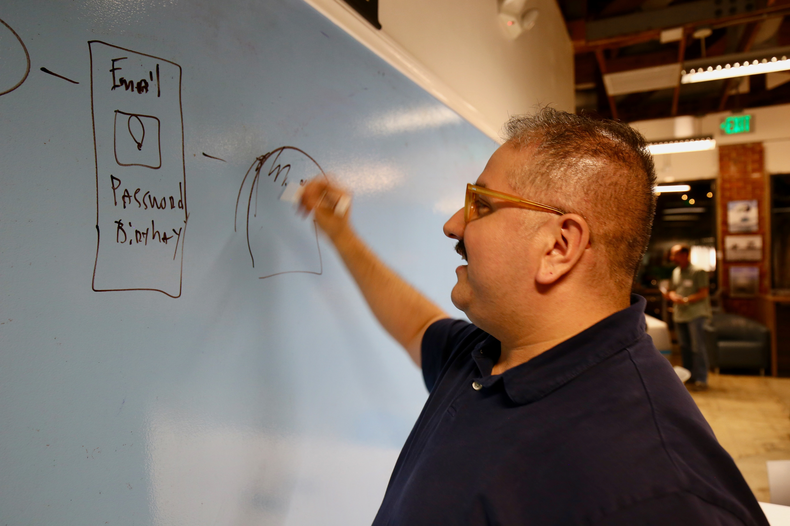

Selected Work
-
Transforming Network Data into Interactive 3D Insights
Empowering users with a dynamic, real-time visualization tool for faster decision-making.
-
Improving IT Workflows with Better Monitoring
Enhancing endpoint monitoring with better navigation, customization, and efficiency.
-
Improving the platform experience for SolarWinds users
Reworked navigation and templates to better reflect how people actually explore and evaluate products.
-
Modernizing eCommerce workflows for industrial buyers
A design system and navigation overhaul rooted in real customer feedback.
About

I design software for people doing real work. I like messy, high-stakes workflows where clarity and trust matter.
I lead with research, prototype quickly in Figma, and ship systems that help teams move faster without breaking things.